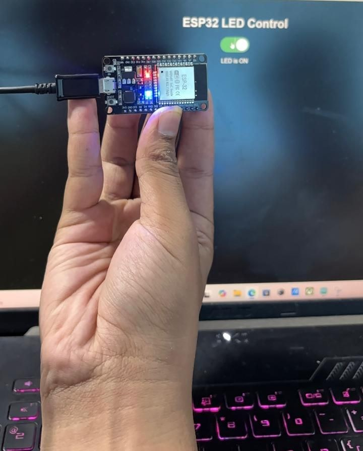
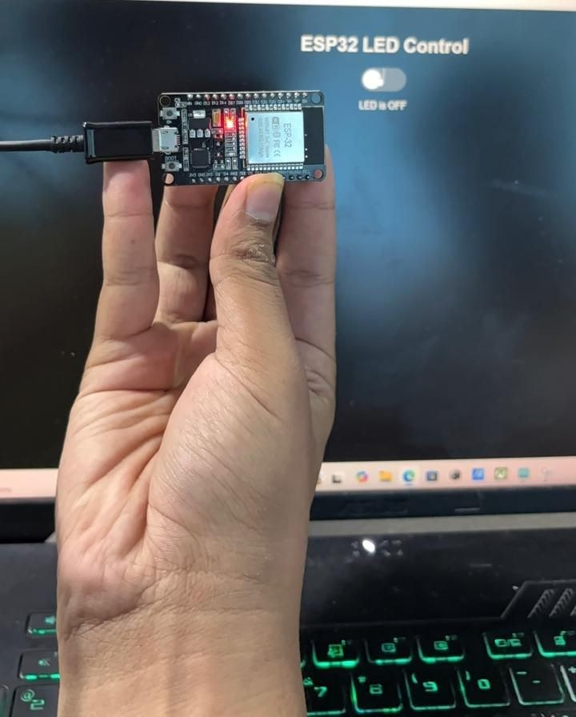

1Overview
Objective. Switch an LED on and off from any phone or laptop on the same Wi-Fi network, with no app and no cloud service in between.
Problem it solves. A microcontroller normally has no screen and no buttons you can reach from across the room. Running a tiny web server on the ESP32 turns any browser into its remote control.
Summary. The ESP32 joins the Wi-Fi network as a station, starts an HTTP server on port 80 and prints its IP address on the Serial Monitor. Opening that address shows a page with Turn ON and Turn OFF buttons. Each button is a link to /on or /off; the ESP32 switches GPIO2 and sends the browser back to the main page, which now shows the new LED state.
2Concepts
A web server on a microcontroller
A web server is just a program that waits for requests and answers them. On the ESP32, the WebServer library listens on port 80, the same port every website uses. When a request arrives for a path such as /on, it runs the function I mapped to that path and sends back a response, usually HTML.
How the browser and the ESP32 talk over Wi-Fi
Both devices are on the same router, so they can reach each other by local IP address. Typing http://<ESP32-IP>/ makes the browser send an HTTP GET request. The ESP32 answers with an HTTP response: a status code (200 OK, 303 redirect, 404 not found), headers, and the page itself.
Station mode
The ESP32 can create its own network (access-point mode) or join an existing one (station mode). This project uses station mode so the phone stays on its normal Wi-Fi.
3System Design
The browser sends a GET request; the ESP32 changes the pin, then redirects back to / so the page always shows the real state.
4Hardware & Software
| Hardware | Software |
|---|---|
| ESP32 DevKit V1 | Arduino IDE with the ESP32 board package |
| 5 mm LED + 220 Ω resistor | Built-in WiFi.h and WebServer.h libraries |
| Breadboard, jumper wires, USB cable | Any phone or laptop browser on the same network |
5Wiring / Setup
| ESP32 pin | Connects to |
|---|---|
| GPIO2 | 220 Ω resistor → LED anode (long leg) |
| GND | LED cathode (short leg) |
The DevKit's blue on-board LED is also on GPIO2, so it lights together with the external LED, which helps when testing.
6Implementation
esp32_webserver_led.inoview on GitHub
// IoT Task 1 - ESP32 Web Server: switch an LED from a web page
// Board: ESP32 DevKit V1 | LED + 220 ohm resistor on GPIO2 (the on-board LED is also on GPIO2)
// Open the Serial Monitor at 115200 baud to see the IP address, then open it in a browser
// on the same Wi-Fi network.
#include <WiFi.h>
#include <WebServer.h>
const char* WIFI_SSID = "YOUR_WIFI_SSID"; // your Wi-Fi name
const char* WIFI_PASS = "YOUR_WIFI_PASSWORD"; // your Wi-Fi password
const int LED_PIN = 2;
bool ledOn = false;
WebServer server(80); // HTTP server on port 80
// Builds the page each time it is requested, so it always shows the current LED state
String buildPage() {
String html = "<!DOCTYPE html><html><head><meta name='viewport' content='width=device-width, initial-scale=1'>";
html += "<title>ESP32 LED</title>";
html += "<style>body{font-family:sans-serif;text-align:center;margin-top:40px}";
html += "a{display:inline-block;padding:14px 28px;margin:8px;border-radius:8px;color:#fff;text-decoration:none;font-size:18px}";
html += ".on{background:#16a34a}.off{background:#dc2626}</style></head><body>";
html += "<h1>ESP32 LED Control</h1>";
html += "<p>LED is <b>" + String(ledOn ? "ON" : "OFF") + "</b></p>";
html += "<a class='on' href='/on'>Turn ON</a><a class='off' href='/off'>Turn OFF</a>";
html += "</body></html>";
return html;
}
void handleRoot() {
server.send(200, "text/html", buildPage());
}
// Each button is a link. Clicking it sends an HTTP GET request (/on or /off) to the ESP32.
void handleOn() {
ledOn = true;
digitalWrite(LED_PIN, HIGH);
Serial.println("GET /on -> LED ON");
server.sendHeader("Location", "/"); // send the browser back to the main page
server.send(303);
}
void handleOff() {
ledOn = false;
digitalWrite(LED_PIN, LOW);
Serial.println("GET /off -> LED OFF");
server.sendHeader("Location", "/");
server.send(303);
}
void handleNotFound() {
server.send(404, "text/plain", "Not found");
}
void setup() {
Serial.begin(115200);
pinMode(LED_PIN, OUTPUT);
digitalWrite(LED_PIN, LOW);
WiFi.mode(WIFI_STA); // join an existing network as a station
WiFi.begin(WIFI_SSID, WIFI_PASS);
Serial.print("Connecting to Wi-Fi");
while (WiFi.status() != WL_CONNECTED) {
delay(500);
Serial.print(".");
}
Serial.println();
Serial.print("Open http://");
Serial.println(WiFi.localIP()); // type this address into the browser
server.on("/", handleRoot); // map each URL path to a handler function
server.on("/on", handleOn);
server.on("/off", handleOff);
server.onNotFound(handleNotFound);
server.begin();
}
void loop() {
server.handleClient(); // check for and answer incoming browser requests
}
Key sections
- HTML interface —
buildPage()builds the page on every request, so the "LED is ON/OFF" text always matches the pin. The two buttons are styled links. - How the page sends a command — clicking Turn ON follows the link
/on, which is an HTTP GET request to the ESP32.server.on("/on", handleOn)maps that path tohandleOn(). - Switching the LED —
handleOn()andhandleOff()calldigitalWrite()and then answer with a 303 redirect to/. - Serving requests —
server.handleClient()inloop()checks for new requests and answers them.
7Configuration
- Open the sketch, set
WIFI_SSIDandWIFI_PASSto a 2.4 GHz network. - Board: ESP32 Dev Module; upload.
- Open the Serial Monitor at 115200 baud and note the printed IP address.
- On a phone connected to the same Wi-Fi, open
http://<that IP>/.
8Evidence




9Challenges & Fixes
Problem. Refreshing the page after pressing a button repeated the last command.
Why. If /on returned the page directly, the browser would still be at /on, so a refresh sends the request again.
Fix. handleOn() and handleOff() answer with a 303 redirect to /. The browser ends up on the main page, and refreshing it only reads the state.
Problem. The ESP32 never connected to the network.
Why. The ESP32 radio only supports 2.4 GHz Wi-Fi, so a 5 GHz-only network never shows up.
Fix. Use a 2.4 GHz network (or a phone hotspot set to 2.4 GHz). The dots printed while connecting show whether it is still trying.
Problem. The page would not open on the phone.
Why. The phone was not on the same network as the ESP32 (for example, it was using mobile data), so the local IP address cannot be reached.
Fix. Connect the phone to the same Wi-Fi and use the IP address printed on the Serial Monitor.
10Reflection
This task made HTTP concrete for me. A URL path is just a name the server maps to a function, and a button on a web page is just a request. Building the page inside the ESP32 also showed why the redirect matters: the page should describe the state, not repeat the command.
11Repository Link
All code for this task: https://github.com/TringyTrongy/protosem-iot/tree/main/task1-esp32-web-server
✓Checklist coverage
Every item from the IoT Portfolio Guide for this task, and where it is on this page.
| Guide item | Where |
|---|---|
| Objective and the problem being addressed | 1. Overview |
| Basic concept of an ESP32 web server | 2. Concepts |
| How the ESP32 and browser communicate over Wi-Fi | 2. Concepts |
| Hardware components used | 4. Hardware & Software |
| Circuit / wiring diagram | 5. Wiring / Setup |
| ESP32 pin connections | 5. Wiring / Setup |
| Complete source code | 6. Implementation |
| HTML interface for controlling the LED | 6. Implementation |
| How the webpage sends a command to the ESP32 | 6. Implementation |
| Photographs of the physical setup | 8. Evidence |
| Screenshots of the web interface | 8. Evidence |
| Video of LED ON/OFF from the webpage | 8. Evidence |
| Problems encountered and how they were solved | 9. Challenges & Fixes |
| Reflection on what I learned | 10. Reflection |
| All files in the repository | 11. Repository Link |